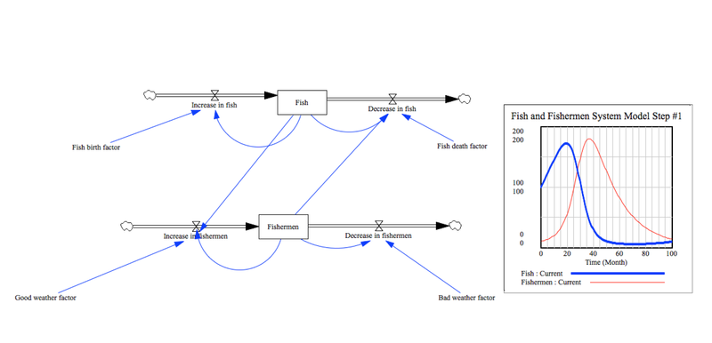
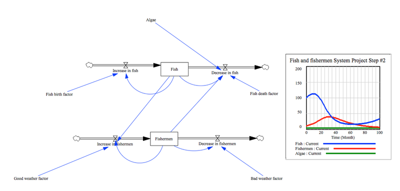
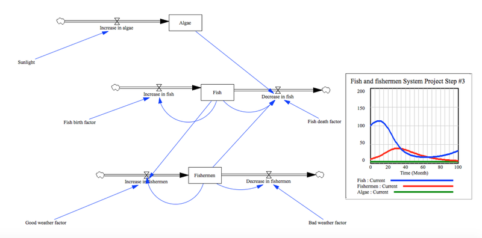

Required Software
To open these system models, you will need to have Vensim downloaded on your computer. Vensim can be downloaded for free, as long as it is being used for personal or educational purposes. The link to download Vensim is here: http://vensim.com/free-download/
To run the models, make sure you have Vensim downloaded on your computer. To open the models, click on the "download model file" link below. In Vensim, click on the SyntheSim button in the top-center part of the screen. It is a small gray box with a green arrow in it. In the SyntheSim mode, you can change the parameters of factors, such as fish birth or death rate, a weather factor, or a sunlight factor, to see how they influence the fish and fishermen populations. The quantities of fish and fishermen are being displayed on a graph on the right side of the screen, which will change as you change the parameters of the factors. You can change the parameters by dragging the bar underneath each factor in the model.
Model 1: Fish and Fishermen
In this model, there are two quantities: fish and fishermen. The fish and fishermen both have rates of increase and decrease. There are factors that influence the rates of increase and decrease of the fish and fishermen. Ths first model is a fairly simple depiction of the relationship between fish and fishermen: the rate of increase for the fish is influenced by the birth factor of the fish, and the rate of decrease of the fish is influenced by the death factor of the fish. The quantity of fishermen is also relatively simplified in this model, the quantity changes with the rate of increase of fishermen and the rate of decrease of fishermen. The rate of increase of fishermen is influenced by a good weather factor, and the rate of decrease in fishermen is influenced by a bad weather factor. In this model, the relationship between fish and fishermen is that as the quantity of fish increases, the number of fishermen increases. Similarly, as the number of fish decreases, the number of fishermen will also eventually decrease.
Download model file Model 2: Fish, Fishermen, and Algae
In the second system model, fish and fishermen are still the two quantities being measured. The rates impacting the quantity of fish are the rate of increase in the number of fish, and the rate of decrease in the number of fish. There are also factors that affect these rates. For exmple, the fish birth factor contributes to the rate of increase in the fish population, and the rate of decrease is contributed to by both a fish death factor and an algae factor. The algae factor is the new element in this model. It is included to demonstrate that there are factors other than fishermen that are contributing to a decrease in the fish population.
The fishermen population has two rates influencing its quantity: a rate of increase in fishermen and a rate of decrease in fishermen. The rate of increase in the number of fishermen is contributed to by a good weather factor, and the rate in the decrease of the number of fishermen is contributed to by a bad weather factor. The weather factors are included in the model to simulate realistic fishing patterns, which are influenced by the weather.
In this model, the populations of fish and fishermen interact in a way that an increase in the quantity of fish would lead to an increase in fishermen, but an increase in fishermen eventually leads to a decline in the fish population. Similarly, a decrease in the number of fisherman would lead to an increase in the fish population, which would lead to an increase in the fishermen population.
Download model file Model 3: The Effects of Sunlight on Fish, Fishermen, and Algae
In this model there are three quantities being measured: fish, fishermen, and algae. Like in the previous two models, the fish and fishermen populations both have a rate of increase and a rate of decrease. The algae, however, only has a rate of increase. This is because most kinds of algae grow exponentially and do not have many predators. There is a factor that influences the rate at which algae grows: sunlight. Increased amounts of sunlight will lead to an increase in the algae population. The quantity of algae influences the quantity of fish. The greater the quantity of algae, the more the fish population decreases.
Download model file 